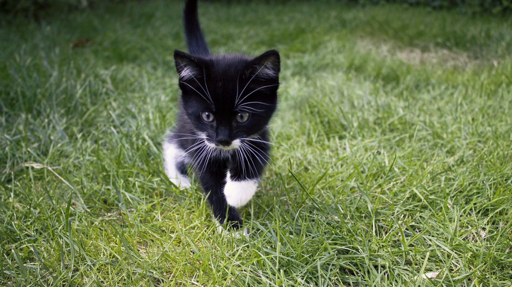
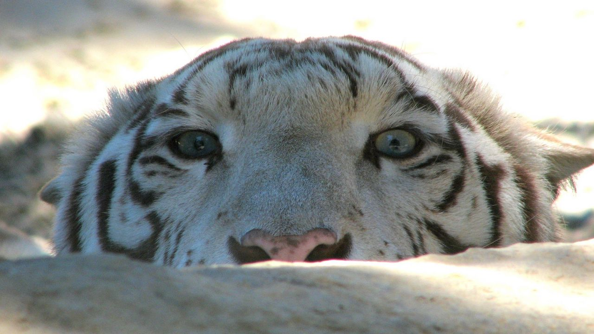

Твой выбор собаки — это зеркало души. Узнай, какая часть тебя ждет свободы за поводком инстинктов.
Вы когда-нибудь чувствовали, что ваша преданность граничит с верностью лабрадора? Или, может, в вас живёт дух вольного хаски, рвущегося к горизонтам? А вдруг вы — мудрый и невозмутимый акита, чьё спокойствие непоколебимо, как скала? Пройдите тест и вы узнаете какая вы 1 из 30 интересных собак.
Пройти тест🐱 Готовы узнать, какой вы котик? Пройдите тест и откройте свою скрытую сущность!
Вы когда-нибудь задумывались, что внутри вас спит пушистый комок с характером? Возможно, вы — грациозный аристократ, как сиамский король, или же бесшабашный хулиган, как рыжий дворовый забияка. А может, ваша душа — это тёплый мурчащий комочек, который только и ждёт, чтобы свернуться калачиком в уютном уголке?
 Пройти тест🐅 Раскройте своего внутреннего тигра — какой хищник скрывается в вашей душе?
Вы когда-нибудь чувствовали, как в вас просыпается дикий, неукротимый зверь? Тот, кто не знает страха, кто идёт к цели с грацией и яростью, кто оставляет след в этом мире, как тигр — когтистый отпечаток на песке времени? Тигр — не просто зверь. Это архетип вашей внутренней силы.
 Пройти тест